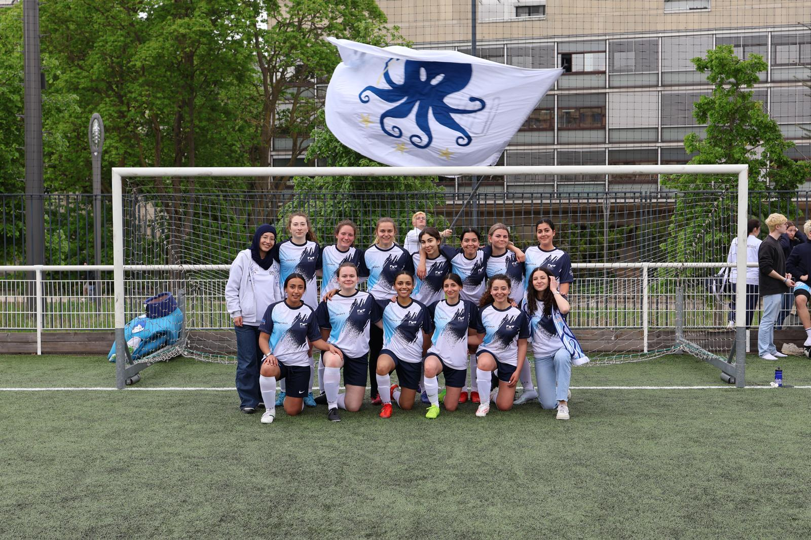
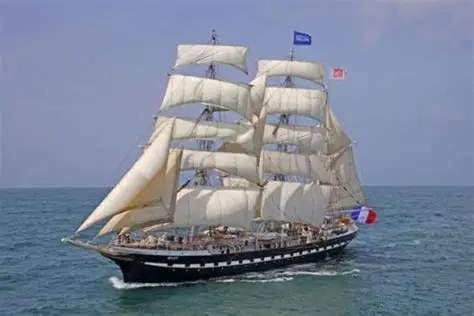
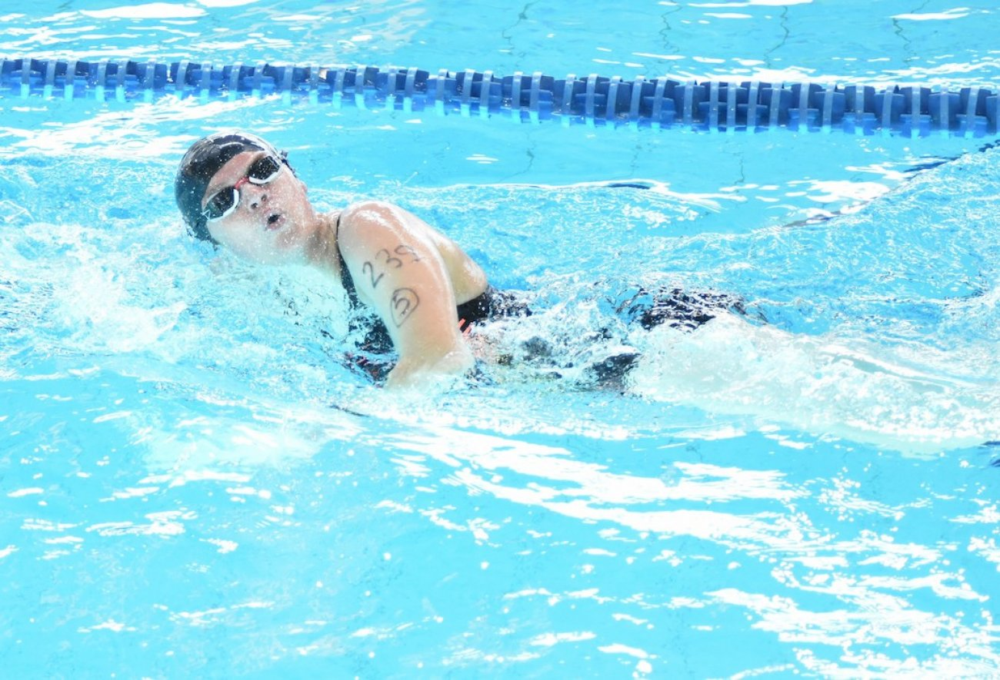
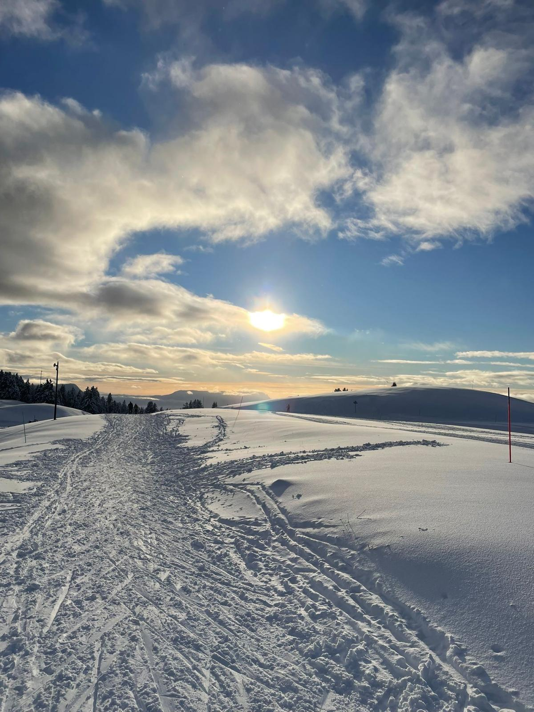
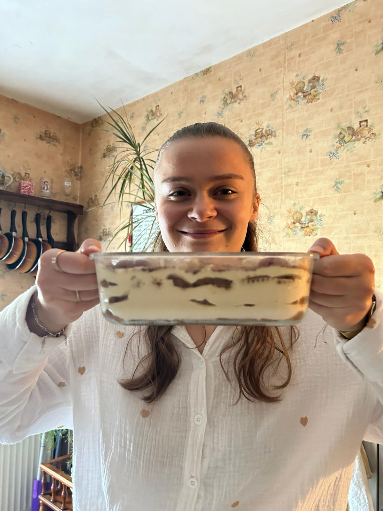

I need to move, create, and experiment. My hobbies reflect this constant drive to explore and dive into experiences that inspire me.

Football has been a major part of my life: I played as a goalkeeper and team captain for fifteen years at a regional level, and later spent five years as a departmental referee.
Teamwork · Endurance · Resilience
What I love about Lego is starting from nothing and watching something take shape in your hands. My next challenge: building the Belem from scratch — no instructions, just bricks and an idea.
Curiosity · Patience · Creativity
I swim a lot in my free time, and in 2024 I earned my Swimming Supervision Certificate, which allowed me to discover a more technical and safety‑focused side of swimming.
Safety · Stress management · Responsibility
I’ve completed around forty hours of flight training and earned my Aeronautical Initiation Certificate (BIA) in 2020. I later received a scholarship to continue flying at the Beauvais-Tillé aeroclub, and even though I haven’t finished my training yet, I fully intend to complete it after my studies.
Curiosity · Technical rigor · Decision-making
I enjoy walking in the mountains just as much as exploring cities, always looking for new places to discover. I much prefer walking over taking the bus because it’s my way of breathing, observing, and fully enjoying the moment.
Connection to nature · Letting go
Sharing meals and discovering cultures through food and simplicity.
Sharing · Openness · Enjoyment
I love traveling, and my dream is to explore a far‑away country someday. For now, I’ve only visited Europe, but I want to discover the entire world and immerse myself in new cultures.
Exploration · Adaptability · Cultural awareness